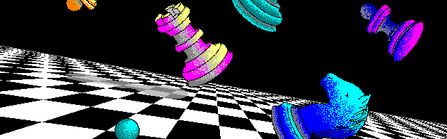

Lab 01:
Lab 01 consists of the initial site structure and commit, basic usage of tags such as <strong>, and the addition of images such as the following.

This website is an evolving project for the Fall 2026 semester of IT 301: Web Technologies, a required
course at JMU. My course repo can be found here.
This site is not intended as a portfolio or reflection of development skills.
Lab 01 consists of the initial site structure and commit, basic usage of tags such as <strong>, and the addition of images such as the following.

Lab 02 consists of the addition of semantic tags to the website, as well as the addition of two paragraphs. This is the first paragraph, which explains what is done in this lab.
The second piece of content is this short article about myself. I am a Junior year CS and IT double major undergraduate student at JMU. I am an avid skier, and an active member of Boarderline Ski and Snowboard Club, Unix Users Group, and a competition member of Cyber Defense Club @ JMU. I work as a TA (Teaching Assistant) for IT333: Advanced Networking, and have worked for the past two semesters as a TA for IT240: Database Administration.
Lab 03 consists of using some basic css in an external stylesheet to style a nested list, it can be found here.
Lab 04 consists of applying some styling to my webpage, using an external css. The current styling of the website exceeds what was required (and done) for this lab.
Lab 05 consists of using what we learned about margins, borders, and padding to construct a letter. I chose H, visible here
Lab 06 covers basic use of flexboxes. We create a website with three images, one larger in the middle, with some spacing, and without any non-flex css properties. Although I was absent, I completed the lab afterwards for some extra practice, you can see it here
Lab 07 consists of more practice with flexboxes. We recreate a page according to a short video showcase. The page consists of a side bar and random photos, which tile like masonry, with a fixed height and a flexible width. You can view the page here
Lab 08 consists of practice with position types and their usage, to modify a skeleton of a basic checkout page with various positions and centering, to match some described behavior. You can see it here.
HW 01 consists of using git locally to create a branch, make these changes, merge back into main, before
pushing back to github.
I then explain the following in my own words, to demonstrate basic awareness of git.
repo: a project folder with changes tracked in git
clone: making a full copy of an existing repo
branch: a version of the software, can be used for making changes off main
commit: a snapshot of changes
push: moving local commits to a central repo; github
pull: moving central repo commits to your local git
pull request: a request to merge branches, subject to review
merge: combining commits from one branch into another
HW 02 consists of more practice with css, made up of the three following tasks
HW 03 consists of more practice with css, made up of the two following tasks